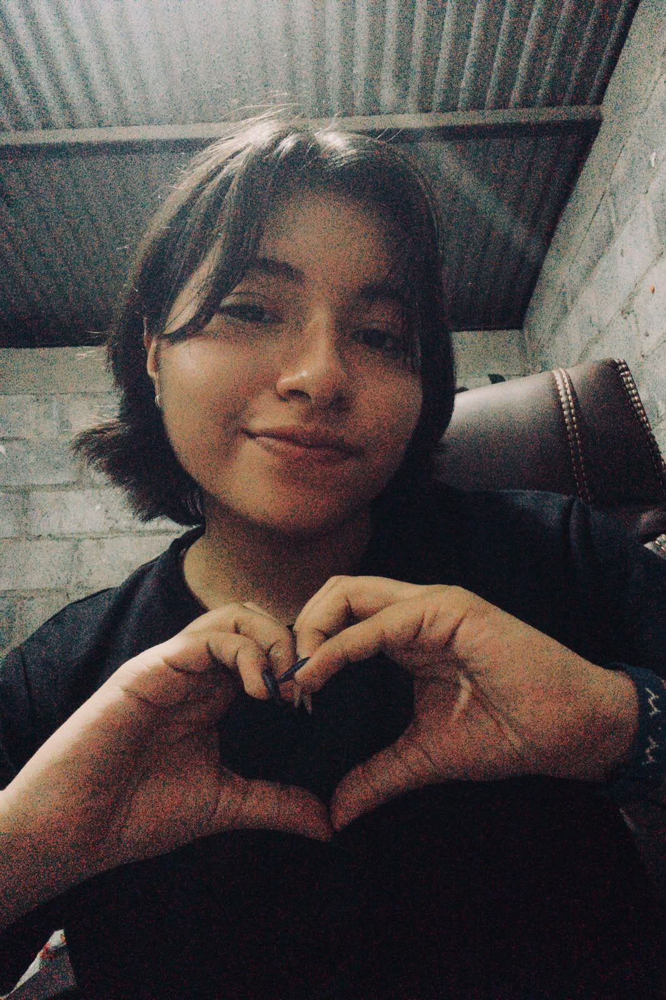

Emi, hice esto para ti.
Sé que quizás no sea la gran cosa, pero es algo que nació de mi honestidad, de mis sentimientos y de todas esas palabras que aparecen en mi corazón cuando mi mente piensa en ti.
Tú siempre encuentras una manera de hacer algo especial por mí: tus poemas, tus canciones, tus palabras y, sobre todo, esa forma tan tuya de estar presente. Por eso, esta vez quiero ser yo quien haga algo por ti. Quiero regalarte un pedacito de lo que llevo dentro, así como tú tantas veces me has regalado un pedacito de ti.
Cómo llegaste a mi vida
Antes de que llegaras, enamorarme de alguien no era algo que pasara por mi cabeza. Y aunque siempre he sido alguien que ama el amor, no estaba esperando encontrarlo en una persona.
Poco a poco fui conociéndote. Al principio me pareciste alguien interesante, pero conforme pasaba el tiempo, cada conversación, cada interacción e incluso cada vez que te veía, encontraba algo que me gustaba de ti. Me encantaba tu manera de ser y, sobre todo, la forma en que me tratabas.
Hay algo que admiro especialmente de ti: tu constancia. Incluso cuando la distancia parecía alejarnos y llegaba a pensar que quizás ya no volveríamos a hablar, tú seguías encontrando maneras de estar presente.
No quería a alguien que simplemente dijera que quería estar conmigo, sino a alguien que también lo demostrara, que buscara compartir su tiempo conmigo y que hiciera algo por acercarse. Y así, sin darme cuenta, entre conversaciones, momentos y pequeños detalles, fui enamorándome de ti.
Las cosas que admiro de ti
Me gusta que seas alguien que sabe escuchar, que tengas esa perseverancia para seguir adelante, tu curiosidad por descubrir y aprender cosas nuevas, y esa constancia que tanto te caracteriza.
Admiro tu creatividad, tu iniciativa y esa capacidad que tienes de encontrar maneras de hacer las cosas. Quizás no siempre te lo diga, pero me gusta observarte, escucharte y descubrir todas esas pequeñas partes de ti que te hacen ser quien eres.
Creo que una de las cosas más bonitas de quererte es que también puedo admirarte.
Un instante que guardaría
Hay un recuerdo al que volvería si tuviera la oportunidad de detener el tiempo: aquel día en que cantamos juntos Cha Cha Chá.
Recuerdo especialmente ese momento en el que mencionamos el «yo te puedo enamorar». No sé si tú lo recuerdas de la misma manera, pero yo sentí una conexión especial contigo. Fue uno de esos instantes en los que algo tan sencillo puede adquirir un significado enorme.
Hoy me resulta bonito pensar en cómo algunas de las cosas que compartimos terminaron convirtiéndose en recuerdos que guardo con tanto cariño.
Lo que provocas en mí
Cada vez que tienes un detalle conmigo, mi corazón estalla como una bomba de alegría. Me haces sentir feliz, amada y querida de una manera que a veces ni siquiera sé explicar.
No es simplemente porque me digas cosas bonitas. Es porque aprecio cada una de tus palabras, el tiempo que dedicas a expresarlas y el cariño que encuentro detrás de ellas.
Tus poemas, tus canciones, tus declaraciones y hasta esas pequeñas cosas que quizás haces sin darte cuenta tienen un significado especial para mí.
Hasta que pueda abrazarte
Hay algo que todavía espero con mucha ilusión: volver a verte y poder abrazarte.
Desde aquella primera y única vez que nos vimos, no he tenido la oportunidad de volver a hacerlo. Y aunque todavía no sé cuándo llegará ese momento, hay algo que tengo claro: cuando vuelva a tenerte frente a mí, quisiera abrazarte como quien finalmente encuentra algo que llevaba mucho tiempo esperando.
Quisiera que ese abrazo pudiera guardar todo aquello que las palabras, las llamadas y la distancia no me han permitido expresar. Y si pudiera elegir, desearía que fuera uno de esos abrazos que uno quisiera llevar consigo para siempre.
Quiero que nunca lo olvides
Quiero que sepas que siempre voy a apoyarte, que estaré para ti y que me siento muy orgullosa de la persona que eres.
Quiero que recuerdes que no estás solo, que tienes a alguien dispuesto a escucharte, a acompañarte en tus días buenos y también en aquellos en los que las cosas no salgan como esperabas.
Quiero verte cumplir tus sueños, descubrir nuevas cosas, crecer y convertirte en esa persona que tanto deseas ser. Quiero poder celebrar tus logros, incluso aquellos que para los demás puedan parecer pequeños.
No quiero que nunca dudes de que tienes en mí a alguien que cree en ti.
Mi promesa para ti
Te prometo amar cada cosa de ti: cada locura, cada ocurrencia, cada nuevo tema de conversación y cada una de esas pequeñas particularidades que te hacen ser quien eres.
Prometo seguir descubriéndote, porque sé que todavía hay muchas cosas de ti que no conozco y que me encantaría descubrir con el tiempo.
Quiero que nunca perdamos esa curiosidad por conocernos, esas ganas de conversar y esa complicidad que poco a poco hemos construido.
Y deseo que cada nuevo día encuentre una razón más para enamorarme de Emilio.
Pequeñas flores, pequeños mensajes
Pulsa cada flor. Hay unas palabras más que quería dejarte.
Una pequeña sorpresa de mi voz para ti ♡
Gracias por ser tú. Gracias por coincidir conmigo.
Con amor,
Leydiesky
